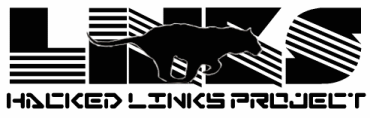

|

For news and current project state feel free to read ChangeLog
The aim of this project is to create some kind of "feature-rich" version of
Links web browser suitable at least for my own needs ;-))
This code is still experimental and buggy!!!
For now, our main differences to Links are:
- Tabbed browsing - you may use tabs either in graphical or even in text mode.
- Lua scripting - ported from Links-Lua, not from current ELinks code, but
the differences are not so sensitive, I hope.
- HTTP Auth - stable, ported from Elinks
- HTTP Proxy Auth - ported from Elinks, need to be checked.
- Blocking of selected images - my own code ;-). You may block images containing given
substring (of course, it is better to use regexps, but this way is
more portable). Just press '-' to edit the list of blocked patterns.
- Cookies saving - ported from ELinks, now our HTTP-header date parsing is
correct, I hope.
- New options system - inspired by ELinks one, but much more uglier
currently ;-)) Only a few options are implemented through it.
Press 'Ctrl+o' to call options manager.
- Possibility to open new windows instead of new links instances in graphics
mode - new socket is created with name 'glinks' in links dir, instead
of 'links' for text instances, so they can work independently. After
that command 'links -g' works like 'mozilla -remote', simply opening
new instances from currently running one. But it has some limitations -
these new windows will open on the same display as original one...
- Url copying - some code from Ludvik Tezar' patch, but the backend is organized
more cleanly - there are two additional fields in struct graphics_driver -
put_to_clipboard and get_from_clipboard. Only X11 backend is functional
now, as I don't use others ;-)
- Full-text selection - Now we have nearly complete full-text selection -
you may select any part of rendered text (except form controls) and copy
it to clipboard. Clipboard charset is configurable through new options
system (Ctrl+'o').
- Simple printing - It is VERY simple - we make
PDF file (throung pdflib) with text only (just a rectangles instead of images), and
with PDF internal fonts only (don't even try to print non-latin-1 texts!!!) - but we have more-or-less correct layout and
page breakings. Press 'P', and it will ask you for filename to print to.
- Forward history - really, single history list, you can move backward
and forward through it
- Extended and configurable 'toolbar' - there are currently Back, History, Forward, Reload,
Bookmarks, Home and Stop buttons.
'Configurability' means that you can change each button look
(they use pixmaps from special internal system-medium-serif-vari font you
can find in graphics/font dir) and even turn it on or off.
- Configurable 'mini-status' - some useful info in lower right corner of
your window to show how many connections now in 'running' or 'connecting'
state are, and also SSL, Content-Encoding and Images flags.
- Some small but useful improvements - support for "small" and "big" tags,
keybinding ("i") to turn on/off images, possibility to show HTTP
header ("|", as in Elinks), support for compressed content (Content-Encoding
and gzipped local files), configurable support for Accept-Charset and Accept-Language.
- Modularized font subsystem - currently builtin fonts and Unicode
TrueType (through freetype backend) may be used. Font manager is available
(Ctrl+'i') for adding/deleting external (only freetype yet) fonts.
External fonts have the same way into the code - so they are antialiased
as good as builtin ;-)
- Dialogs shadows and borders - Just shadows ;-))
Plans
Currently I plan to (but don't know when ;-)):
- Implement keys rebinding
- Improve printing support
- ...
But maybe I'll just write a graphics subsystem for ELinks instead ;-)
Contributions
This project is currently maintained by Sergey Karpov
You are encouraged to send me various patches implementing usable and unusable
features ;-))
|